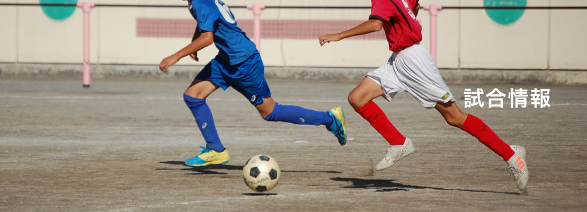
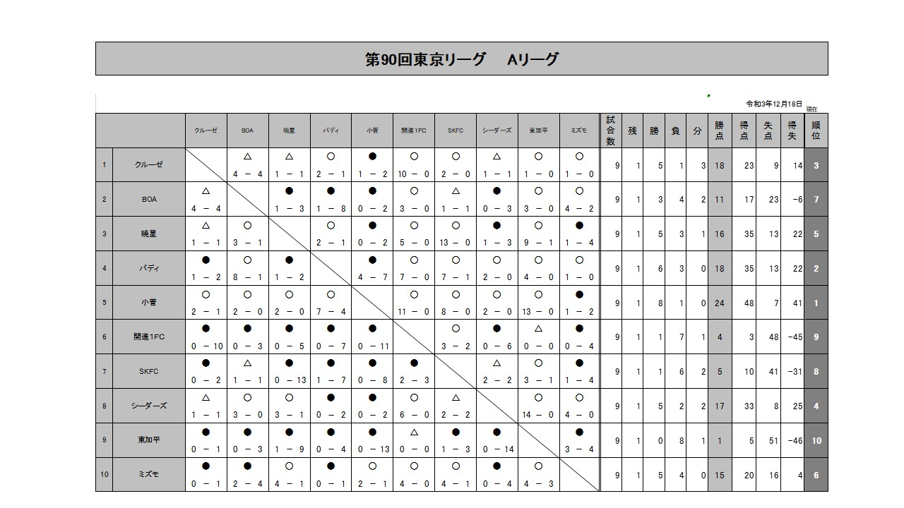
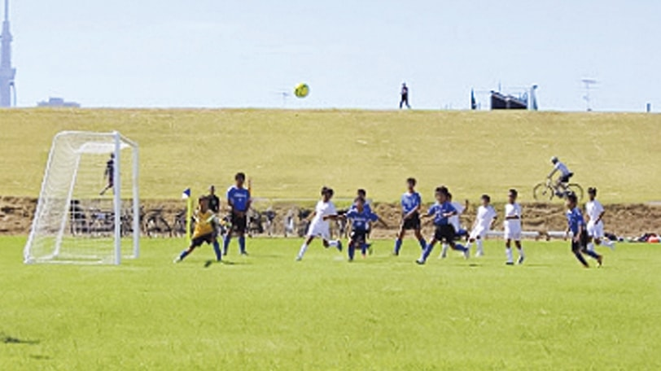

試合結果は大きく、ニュースは短く、チーム写真で空気を作る。
現行の情報量は維持しながら、写真と見出しの強弱で「大会が動いている」印象を強める案です。少年サッカーらしい熱量を出しつつ、導線はシンプルにしています。

現行の情報量は維持しながら、写真と見出しの強弱で「大会が動いている」印象を強める案です。少年サッカーらしい熱量を出しつつ、導線はシンプルにしています。
Latest Result


東京都内の参加チームを、写真主体のカードで紹介。